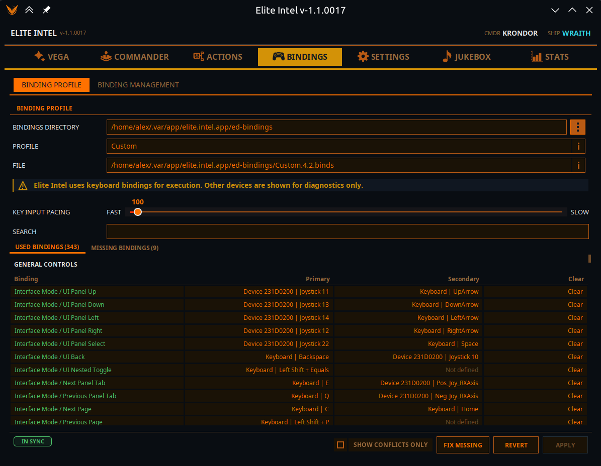
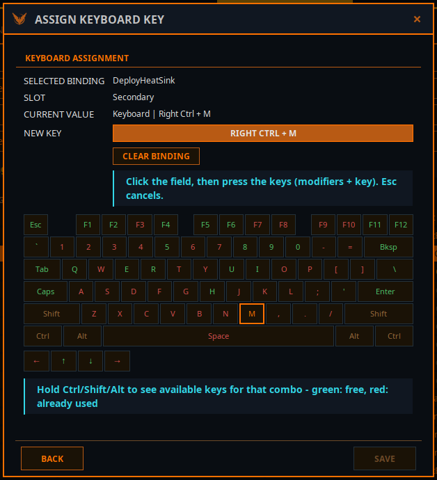
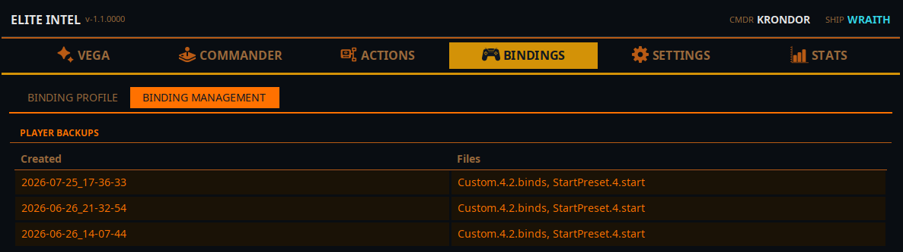

Pestaña Bindings
 Nuevo en V1.1.
Los bindings eran un rincón de la pestaña Acciones; ahora tienen pestaña propia, con un editor
completo.
Nuevo en V1.1.
Los bindings eran un rincón de la pestaña Acciones; ahora tienen pestaña propia, con un editor
completo.
Elite Intel pilota tu nave pulsando las teclas a las que Elite Dangerous está asignado. Si un control no tiene asignación de teclado, Elite Intel no puede usarlo, y esta pestaña es donde lo descubres y lo arreglas.
Dos subpestañas: Perfil de bindings y Gestión de bindings.
Perfil de bindings

Qué archivo se está usando
Perfil: detectado automáticamente. Elite Intel lee la entrada StartPreset activa y, si hace
falta, recurre al archivo .binds más reciente.
Archivo: el archivo .binds que se está usando ahora mismo para diagnóstico y asignación.
Directorio de Bindings: opcional. Déjalo en blanco y se usa la ubicación estándar de Elite Dangerous; ponlo si tu instalación está en un sitio poco habitual.
Ambos campos tienen un botón ⓘ que explica exactamente cómo se eligió el valor.
Las tablas de bindings
Dos tablas: Bindings usados y Bindings faltantes, cada una con su recuento. Los bindings se agrupan por categoría:
Nave / vuelo · Combate · Paneles de IU · Mapas · Exploración · Cámara · SRV · A pie · Varios
| Columna | Significado |
|---|---|
| Binding | El control |
| Primario / Secundario | Las dos ranuras que Elite Dangerous da a cada control |
| Estado | Faltante · Sin teclado (asignado, pero solo a un mando) · Sin definir |
| Corrección rápida | Asigna una tecla libre y segura a este control concreto |
| Borrar | Quita la asignación de teclado, dejando intactas las de mando y HOTAS |
Los HOTAS y mandos se muestran pero no se pueden editar. Elite Intel ejecuta a través de asignaciones de teclado, así que los demás dispositivos aparecen solo para diagnóstico.
Mostrar solo conflictos filtra las tablas para dejar los problemas.
Conflictos
Elite Dangerous considera que un acorde entra en conflicto solo cuando es exactamente el mismo
acorde: G y Shift+G conviven sin problema. Elite Intel usa la misma regla, así que marca lo que
el juego marca de verdad.
Las filas en conflicto se colorean, y al pasar el ratón se muestra Comparte tecla con: y la lista.
También puedes ver Gemelo nave/SRV — muchos lo asignan igual que:, que no es un conflicto sino una sugerencia. Algunos controles de nave y de SRV se asignan por convención a la misma tecla.
Editar un binding
Haz clic en una ranura para abrir el diálogo de asignación.

Muestra el binding seleccionado, la ranura y el valor actual. Después haz clic en el campo y pulsa las teclas que quieras, modificadores y tecla juntos. Esc cancela. Se admiten acordes con varios modificadores.
Un mapa de teclado en vivo muestra lo disponible: mantén Ctrl/Mayús/Alt para ver las teclas libres para esa combinación; verde es libre, rojo ya está en uso. Las teclas reservadas por el sistema operativo se marcan y no se pueden asignar.
Borrar binding elimina la asignación.
Corregir faltantes
Un botón que asigna teclas seguras y compatibles con tu distribución a todos los controles que no tienen asignación de teclado.
- Las asignaciones existentes nunca se modifican.
- Ninguna tecla se reutiliza jamás.
- Los cambios van solo a tu borrador.
Informa de lo que hizo, y de lo que omitió y por qué: ambas ranuras ya en un mando, sin teclas seguras libres, o ninguna ranura que se pudiera editar con seguridad.
Borrador, Aplicar, Revertir
Las ediciones no van directas a Elite Dangerous. Se acumulan en un borrador, y la insignia de estado muestra Borrador — sin aplicar al juego o Sincronizado. El mismo estado aparece en la lectura Teclas de la pestaña Vega.
| Botón | Qué hace |
|---|---|
| Aplicar al juego | Escribe el borrador en tu archivo .binds, haciendo antes una copia de seguridad |
| Revertir desde el juego | Descarta el borrador y recarga desde el archivo del juego |
Tras aplicar, abre y luego cierra la pantalla de Controles en Elite Dangerous. El juego solo relee sus asignaciones cuando se abre esa pantalla. Elite Intel también lo dice en voz alta.
Si el archivo de asignaciones del juego cambió después de crear tu borrador, Aplicar se niega y te pide recargar o descartar primero, en lugar de sobrescribir en silencio la edición de otro.
Si cierras la aplicación con un borrador sin aplicar, se te pregunta si quieres Aplicar al juego, Conservar borrador o Descartar.
Gestión de bindings

Tus copias de seguridad de asignaciones, listadas por fecha de Creada y por los Archivos que contiene cada una. Elite Intel hace una automáticamente antes de cada Aplicar; Copiar ahora hace una cuando se lo pides.
| Botón | Qué hace |
|---|---|
| Restaurar al borrador | Carga la copia en tu borrador, para que puedas revisarla antes de que toque el juego |
| Restaurar en vivo | La carga y la aplica al juego directamente. Las comprobaciones habituales de aplicación segura siguen ejecutándose |
Cualquiera de las dos sustituye los cambios sin guardar del borrador actual, y ambas preguntan antes.
Community 👉Matrix👈